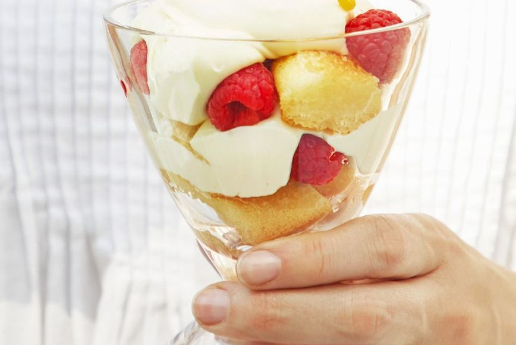

Healthy Eating 101
Home
Healthy Snacks
Healthy Meals
Healthy Desserts
About Us
Contact Us
Healthy Desserts
Healthy Vegan Desserts
Healthy Desserts
Healthy Brownies
Healthy Brownies - Ingredients
1/2 cup superfine almond flour
2 tablespoons coconut flour
1/4 cup unsweetened cocoa powder
1/2 teaspoon baking powder
1/4 cup semi-sweet chocolate chips (+ more for topping)
1 large egg
1/3 cup all-natural almond butter, drippy
1/4 cup maple syrup
1/4 cup unsweetened almond milk
1 tablespoon melted coconut oil
sea salt, to taste
Healthy Brownies - Preparation method
First, preheat oven to 350ºF. Then spray a bread pan with coconut oil cooking spray.
Place almond flour, coconut flour, cocoa powder, baking powder, and chocolate chips into a large bowl. Whisk until there are no more lumps.
Then, Add in an egg, almond butter, maple syrup and almond milk and milk until combined. Add in melted coconut oil and mix one more time. Your batter should be fudgy thicker than normal brownie batter.
Transfer batter into bread pan and top with a few more chocolate chips. Bake at 350ºF for 16-18 minutes, making sure not to over bake!
Remove brownies from oven and sprinkle on some sea salt. Let cool for at least 5 minutes before slicing and serving.
Fresh Fruit Cheesecake Pie
Fresh Fruit Cheesecake Pie - Ingredients
44 tea biscuits
8 tbsp. unsalted butter, melted
2 8-oz. packages cream cheese, at room temperature
1/2 cup. granulated sugar
1 1/2 cup. very cold heavy cream
2 tbsp. fresh lemon juice
2 clementines, peeled and sliced
1 kiwi, peeled and sliced
1/4 cup. blueberries
Edible flowers, for serving
Fresh Fruit Cheesecake Pie - Preparation method
In a food processor, pulse the cookies to form fine crumbs.
Add the melted butter and pulse to combine.
Transfer to a 9-inch pie dish and press evenly on the bottom and up the sides.
Refrigerate for at least 20 minutes.
Using an electric mixer, beat the cream cheese and sugar in a large bowl on medium-high speed until smooth, about 2 minutes.
Reduce mixer speed to low and gradually add the cream. Increase speed to medium-high and beat until stiff peaks form, 3 minutes.
Beat in the lemon juice to combine. Spread evenly into the crust.
Refrigerate until the mixture is set, at least 4 hours and up to 2 days, covering lightly with plastic wrap after 1 hour.
Just before serving, top with the fruit and edible flowers, if using.
Lemon Mascarpone Parfaits

Lemon Mascarpone Parfaits - Ingredients
16 ladyfinger cookies
1 pt. lemon sorbet, melted
1 8-oz package mascarpone
1 cup. heavy cream
1/2 cup. sweetened condensed milk
1 tsp. pure vanilla extract
1 10-oz jar lemon curd (about 1 cup)
2 tsp. finely grated lemon zest, plus more for serving
Raspberries, for serving
Lemon Mascarpone Parfaits - Preparation method
Arrange 8 lady¬finger cookies (breaking as necessary) in bottoms of 8 short 8- to 10-oz glasses, then drizzle half of melted sorbet over them to evenly coat. Let sit 10 minutes to absorb liquid.
Meanwhile, in large bowl, using electric mixer with whisk attachment, whisk mascarpone, heavy cream, sweetened condensed milk, and vanilla on low speed to combine. Increase speed to medium-high and beat until medium-stiff peaks form.
In second large bowl, whisk lemon curd and zest until thickened and light in colour.
Fold 1/3 of mascarpone mixture into lemon curd until well blended, then gently fold in remaining mascarpone mixture.
Spoon some cream mixture over ladyfingers and top with some raspberries and additional cream, then break remaining ladyfingers so they fit on top.
Hold 1 piece in remaining melted sorbet until soaked and softened and place on top of cream mixture. Repeat with remaining lady¬fingers and sorbet, arranging in single layer over cream.
Spoon remaining cream mixture over top and refrigerate until ready to serve. Top with additional raspberries and lemon zest just before serving if desired.
No-Churn Mango-Berry Ice Cream
No-Churn Mango-Berry Ice Cream - Ingredients
1 1/2 lb. frozen raspberries
1/2 lb. frozen mango
1/2 cup. sweetened condensed milk (7 ounces)
1/2 tsp. salt
No-Churn Mango-Berry Ice Cream - Preparation method
In food processor, pulse fruit, scraping side of bowl often, until finely chopped and fluffy.
Add sweetened condensed milk and salt and pulse, occasionally scraping side of bowl, until mixture is smooth and whirring around blade in continuous wave.
Transfer mixture to 9- by 5-inch loaf pan.
Freeze, uncovered, until set, about 4 hours.
If not serving immediately, cover tightly with plastic wrap and freeze up to 2 weeks. Makes about 5 cups.
Healthy Vegan Desserts
Vegan Chocolate Orange Ganache Pots
Vegan Chocolate Orange Ganache Pots - Ingredients
For the choc pots:
250 ml coconut cream
2 Tbsp coconut oil
2 Tbsp maple syrup
1 Tbsp orange essence
100 g vegan chocolate
2 Tbsp raw cacao
For the orange syrup:
150 ml orange juice
2 Tbsp coconut sugar
Vegan Chocolate Orange Ganache Pots - Preparation method
Break up the chocolate and add to a large bowl.
Heat the coconut cream, coconut oil, maple syrup & orange essence in a saucepan until just before boiling. Stirring constantly.
Pour the mix over the chocolate and leave for a few minutes to allow the chocolate to melt.
Fold in the raw cacao and stir gently so that everything is combined.
Spoon the mix into glasses or espresso cups then pop in the fridge to firm up – around 4hrs or overnight.
To make the orange syrup; Add the orange juice and coconut sugar to a pan, heat gently until the sugar dissolves and the juice thickens. Set aside to cool.
Top the choc pots with the orange syrup.
Vegan Peanut Butter Chocolate Chip Cookie Bars
Vegan Peanut Butter Chocolate Chip Cookie Bars - Ingredients
Cookie Layer
½ cup plus 2 tablespoons creamy peanut butter
¼ cup plus 1 tablespoon melted coconut oil
¼ cup plus 1 tablespoon maple syrup
2 teaspoons vanilla extract
Heaping ½ teaspoon sea salt
2½ cups almond flour
2½ tablespoons maca powder
1 cup vegan chocolate chips
Cacao Layer
1½ cups walnuts
2 tablespoons cacao powder
¼ teaspoon sea salt
10 soft medjool dates
2 tablespoons water
Flaky sea salt for sprinkling on top, optional
Vegan Peanut Butter Chocolate Chip Cookie Bars - Preparation method
Line an 8x8-inch baking pan with parchment paper.
In a large bowl, stir together the peanut butter, coconut oil, maple syrup, vanilla, and salt until combined.
Add the almond flour and maca and stir to combine (the mixture will be thick). Fold in the chocolate chips and press into the pan.
Place in the freezer so that it firms up a bit while making the next layer.
In a small food processor, pulse the walnuts, cacao powder, and sea salt until the walnuts are well chopped. Add the dates and pulse to combine, adding 2 tablespoons water if the blade gets stuck.
Process until smooth, then spread onto the cookie layer.
Sprinkle with sea salt if desired. Freeze for 30 minutes (this will help them firm up, making them easier to cut).
Remove and slice into bars. Store remaining bars in the fridge.
Finished bars can also be frozen. Let each bar thaw for about 15 minutes at room temperature.
Vegan Chocolate Cake
Vegan Chocolate Cake - Ingredients
Sweet Potato Frosting
1 large sweet potato, enough to yield 3/4 cups mash
1/4 cup plus 2 tablespoons semisweet chocolate chips
2 tablespoons unsweetened cocoa powder
1 tablespoon melted coconut oil
pinch of sea salt
Chocolate Cake
3/4 cups all-purpose flour
1/2 cup whole wheat flour
1/2 cup unsweetened cocoa powder
1 teaspoon baking soda
1/2 teaspoon sea salt
1/4 teaspoon cinnamon
1 cup almond milk
3/4 cups maple syrup
1/4 cup extra-virgin olive oil
1 teaspoons apple cider vinegar
1 teaspoons vanilla extract
sprinkles, optional
Vegan Chocolate Cake - Preparation method
Make the sweet potato frosting: Preheat the oven to 425°F. Use a fork to poke a few holes into the sweet potato.
Place on a baking sheet or on a piece of foil and roast until very tender, about 60 minutes.
Let the potatoes cool slightly, then measure 3/4 cups of the soft flesh. In a (small) food processor, puree the sweet potato, chocolate chips, cocoa powder, coconut oil, and salt. The heat of the sweet potato will melt the chocolate.
Make the cake. Reduce the oven heat to 350°F and grease an 8x8 baking pan.
In a large bowl, stir together the flours, cocoa powder, baking soda, salt, and cinnamon. To the same bowl, add the almond milk, maple syrup, olive oil, apple cider vinegar, and vanilla. Stir until combined.
Pour the batter into the prepared cake pan and bake for 25 to 30 minutes, or until the top of the cake springs back when pressed or a toothpick inserted in the center comes out clean. Place the pan on cooling racks and cool for 10 minutes.
Gently loosen the sides of each cake with a knife. Remove the cakes from the pan and place back on the racks to cool completely. Frost the cake and serve!
Vegan Tiramisu
Vegan Tiramisu - Ingredients
250ml pot whippable plant cream
1 tbsp icing sugar
1 tsp vanilla bean paste
2 tbsp coffee liqueur, or dark rum
100ml coffee, cooled
1½ tbsp golden caster sugar
2 tbsp cocoa powder
For the sponge
100g dairy-free spread, plus extra for the tin
200ml dairy-free milk
½ tbsp cider vinegar
2 tsp vanilla extract
125g golden caster sugar
200g self-raising flour
½ tsp baking powder
Vegan Tiramisu - Preparation method
Heat the oven to 180C/160C fan/gas 4. First, make the sponge. Using a little dairy-free spread, butter and line a 20cm x 30cm tin (or 25cm square).
Put the dairy-free milk in a jug and stir in the vinegar and extract, and leave for a few minutes to thicken.
Beat the dairy-free spread and sugar together until creamy, then beat in the thickened milk mixture, flour, a pinch of salt and the baking powder until you have a smooth batter.
Scrape the batter into the tin and bake for 20-25 mins until lightly golden and risen, and a skewer comes out clean when inserted into the middle.
Leave to cool in the tin for 10 mins, then transfer to a rack to cool completely.
Whip the plant cream with the icing sugar and vanilla bean paste until softly whipped.
Mix the liqueur, coffee and caster sugar in a bowl. Cut the cooled sponge into 16-18 sponge fingers.
Add half the sponge fingers to a small serving dish (about 15cm x 20cm), breaking them up to fill any gaps.
Using a pastry brush, brush the sponge with some of the coffee mixture.
It won’t absorb as much as regular sponge fingers, so add gradually until they are lightly soaked.
Spoon over half the cream mixture, then add the remaining sponge fingers.
Brush again with the coffee mixture, then add the remaining cream and chill for a few hours or overnight.
Sieve over the cocoa powder to serve.